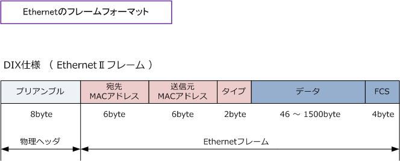
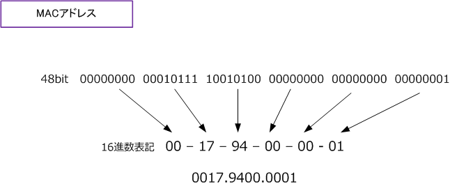
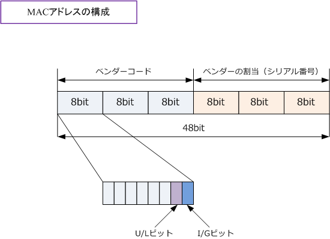

Ethernet LAN - DIX / IEEE
イーサネットフレーム
イーサネットフレームとは、イーサネットLAN通信の際に使用するデータのフォーマットのことです。 TCP/IPでいうパケットという用語の代わりに、イーサネットではフレームという用語を使用します。 そのイーサネットフレームのフォーマットを紹介します。イーサネットフレームは複数のフレームが 存在しますが、Ethernet?UフレームとIEEE802.3フレームを紹介します。現在、最も使用されている イーサネットフレームはDIX仕様です。つまりイーサネットフレームといえばEthernet?Uを指します。

現在、TCP/IPが完全に主流ですが、NetwareやNetBIOSを使用しているならIEEE802.3フレームを使用している場合もあります。
| イーサネットフレーム | |
|---|---|
| フィールド | フィールドの説明 |
| プリアンブル | イーサネット通信で送受信の同期を取り、フレームの始まりを合図するために用いる特別なビット列のこと。 IEEE802.3フレームではこの特別なビット列の最初の7バイトをプリアンブル、最後の1バイトをSFDと呼ぶ。 プリアンブルは、ハードウェアにより生成され受信後に破棄されるためイーサネットフレームのサイズには 含まれない。それゆえに、イーサネットフレームのサイズは、最小64byte、最大1518byteとされている。 |
| 宛先 MACアドレス |
イーサネットでは通信するためにMACアドレスを使用する。ここでは通信相手となる宛先のコンピュータの MACアドレスの情報が入る。またはマルチキャストアドレス、ブロードキャストアドレスが入ることになる。 |
| 送信元 MACアドレス |
イーサネットフレームを送信するコンピュータのNICのMACアドレスの情報が入る。 |
| タイプ | 次に続く「データ」フィールドに格納する上位層プロトコルを識別するフィールドが入る。※1 |
| 長さ | 次に続く「データ｣フィールドのサイズを示すフィールドが入る。上位層プロトコルの識別のために IEEE802.2フィールドを使用する。後に、「長さ」フィールドを、「長さ/タイプ」フィールドに改訂。 |
| データ | 最小で46byte、最大で1500byteのデータが入る。データが46byte未満である場合、ダミーのデータ 「0」を追加して46byteにする。これをパディングと言う。 セグメント内での衝突検出を行うためには、 フレームの全体長がFCSも含めて64byte以上である必要があるため、パディング処理が行われる。 |
| FCS | 受信したフレームに誤りがないかどうかを調べるために付加されるデータ。CRCという値が含まれる。 |
※1 イーサネットフレームのタイプの主な値は次の通りです。タイプコードは16進数で表すため「0x」から始まります。
| タイプコード | プロトコル |
|---|---|
| 0x0800 | IPv4 |
| 0x0806 | ARP |
| 0x809b | AppleTalk |
| 0x8100 | IEEE802.1q |
| 0x8137 | IPX |
| 0x86dd | IPv6 |
MACアドレスとは
MACアドレスはイーサネットLAN通信において使用されるアドレスです。物理アドレスとも呼ばれています。 PCのNICやルータのLANポートなど各イーサネットカード（ポート）に固有のID番号です。世界中のイーサ ネットカード（ポート）に一意の固有のID（MACアドレス）が割り当てられており、IEEEで管理しています。
MACアドレスは48ビット（6バイト）で構成されます。上位の24ビットがベンダーコードと呼ばれていて 各ベンダーに固有に割り当てられている値。下位24ビットは各ベンダーが一意となるように割り当てます。 48ビットは8ビットごとに区切り、8ビットごとに16進数で表記します。この値は通常2桁ずつまたは4桁ずつ 区切り表記されます。PCのNICのMACアドレスはコマンドプロンプトを開いて ipconfig/all で確認できます。

このMACアドレスはシスコルータのEthernetポートの情報です。ベンダーコードは上位24ビットなので 16進数の「00-17-94」の部分であることが分かります。「00-17-94」をIEEEのWebサイトでSearchで 検索すると「Cisco Systems」と表示されます。ベンダーコードはOUIとも呼ばれます。ちなみにシスコ のような大企業は、1つではなく非常に数多くのベンダーコードをIEEEから取得しています。
ベンダーコードは、実は3byte全てをベンダー識別のために使用している訳ではなくて、ベンダーコードの はじめの1byteのうち、先頭から7ビット目を U/Lビット、8ビット目を I/Gビット として予約しています。

U/Lビットが「0」である場合はグローバルアドレスを指して、「1」の場合はローカルアドレスを指します。 通常は「0」となっています。宛先MACアドレスのI/Gビットは「0」の場合はユニキャスト通信を指します。 宛先MACアドレスのI/Gビットは「１」である場合は、マルチキャストまたはブロードキャストを指します。 48ビットの全てが「1」である場合、つまりMACアドレスが「FFFF.FFFF.FFFF」の場合はブロードキャスト アドレスを指します。なお、MACアドレスが 0100.5E から始まる場合はマルチキャストアドレスを指します。